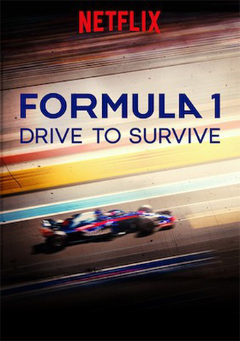
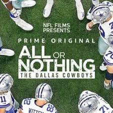
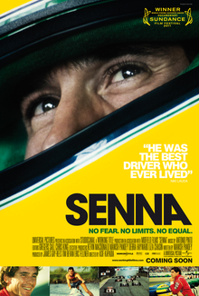
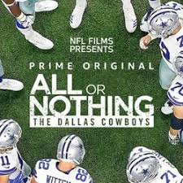
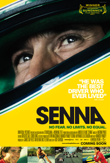
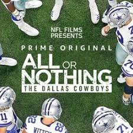
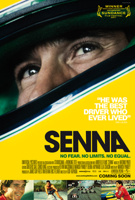

Recently Watched
 



THESE ARE HIGH TIMES FOR THE SPORTS DOCUMENTARY. I am a sports lover. My first sports documentary which I remember watching was "The Damned United(2010)" in 2012. The story of the controversial Brian Clough's 44-day reign as the coach of the English football club Leeds United. I not only liked that movie but it also captured my attention towards the fact that people seem to think they know the stories, but a film-maker can step back and show reasons why and how it led to such iconic events. After seeing that movie I became interested in watching various other sports documentaries and that's how the journey started.
I consider watching SPORTS DOCUMENTARY as a "hobby" because it gives us something fun to do during our leisure time and affords us the opportunity to learn new skills. It not only develops me personally but also socially. Not only will I have the experiences and stories that I can share with others, I will also have some specialized knowledge that I can teach to anyone who also has an interest in the same topics as I do.
So whenever I am bored or having some free time to spend I just switch on Netflix or Prime Videos and search for some sports documentaries or docuseries and watch it. Because I know every documentary or series will have something new to give me.

